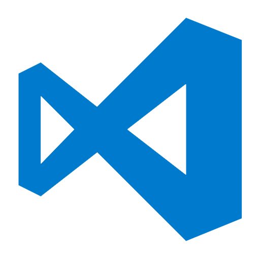

Visual Studio Code
ตัวแก้ไขและปรับแต่งโค้ด (code optimized editor) ที่ตัดความสามารถของ
Visual Studio รุ่นปกติ (พวก GUI designer) ออกไป เหลือแต่ตัว editor สามารถทำงานข้ามแพลตฟอร์ม ทั้งบนวินโดวส์ แมค และลินุกซ์
Download
ตัวแก้ไขและปรับแต่งโค้ด (code optimized editor) ที่ตัดความสามารถของ
Visual Studio รุ่นปกติ (พวก GUI designer) ออกไป เหลือแต่ตัว editor สามารถทำงานข้ามแพลตฟอร์ม ทั้งบนวินโดวส์ แมค และลินุกซ์
IDE Tools ล่าสุดจาก Google เพื่อพัฒนาโปรแกรม Android โดยเฉพาะ โดยพัฒนาจากแนวคิดพื้นฐานมาจากการทำงานของ Eclipse และ Android ADT Plugin โดยวัตถุประสงค์ของ Android Studio คือต้องการพัฒนาเครื่องมือ IDE ที่สามารถพัฒนา App บน Android ให้มีประสิทธิภาพมากขึ้น
DownloadText Editor ที่อยู่มานานหลายปีและมีการอัพเดดฟีเจอร์ใหม่ ๆ อยู่ตลอดเวลา
รองรับการเขียนได้หลายภาษามาก เช่น ASP, PHP, JavaScirpt, HTML, CSS, Java,
SQL และอื่น ๆ อีกมากมาย แถมยังสามารถติดตั้ง Plugin ในแต่ล่ะภาษาเพิ่มได้
เครื่องมือพัฒนาโปรแกรมที่สามารถพัฒนาได้ทั้ง Android และ iOS ในรูปแบบ Native App ด้วยภาษา C# โดยอาศัยหลักการแปลง Code ที่เขียนด้วย C# ให้สามารถ Compile ด้วยภาษา Java และ Object-C เพื่อที่จะให้ Apps ที่เขียนด้วย C# นั้นสามารถทำงานได้เหมือนกันการ เขียนด้วยภาษา Java หรือ Objective-C
Downloadแพลตฟอร์มดาต้าเบสครบวงจร ซึ่งมีระบบบริหารข้อมูลระดับเอนเตอร์ไพรซ์ พร้อม
กับมีเครื่องมือระบบธุรกิจอัจฉริยะ (business intelligence) ในตัวช่วยให้จัดเก็บ
ข้้อมูลรีเลชันแนลและข้อมูลที่มีโครงสร้างได้อย่างปลอดภัยมากขึ้นและมีเสถียรภาพมากขึ้น
รวมทั้งช่วยให้คุณสร้างและบริหารแอพพลิเคชันข้อมูลประสิทธิภาพสูง